Moose
Gmail without the noise. Text only, stacked by sender, ranked by what matters, and built to be driven by your AI agent.
Download for MacView on GitHub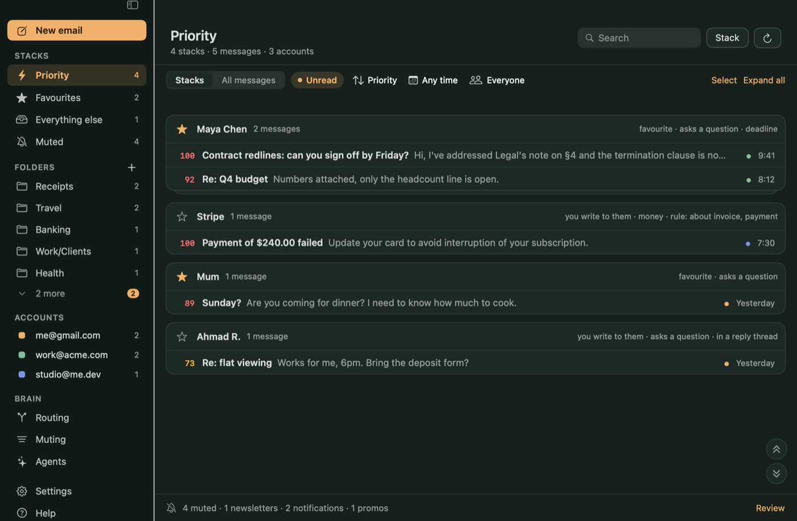
StackedOne card per sender across all your Gmail addresses, ranked together.
Priority, explainedA 0–100 score worked out on your Mac, with the reason shown next to each stack.
Noise freeNewsletters and promos are muted, never deleted. Text only: no images, no tracking pixels.
A quiet stack windowOne card at a time: read, reply, delete. Mass actions with Undo instead of “are you sure?”.
A reader that briefs youThe gist, what it asks of you and the dates, written on your Mac. The original is cleaned, with trackers hidden.
Docked reply, by voice tooReply to a single quote, draft with Claude, or dictate. Saved as you type.
FoldersPlain-language rules file mail into Gmail labels. Every folder opens as stacks, and you can reorder and manage them.
Find, sort, selectFilter by date and sender type, sort five ways, select many and archive or delete with Undo.
Write new mail⌘N: tell Claude what to say, add Cc, Bcc and attachments.
Smart routingRules in plain English. Favourite a sender and they always rank high.
MCP-firstEverything in the window is also an agent tool. You choose: read only, draft & ask, or full access.
Replies with ClaudeDrafts in your voice through your own Claude CLI. No API key stored.
Install
curl -fsSL https://raw.githubusercontent.com/kalahroudi/moose/main/scripts/install.sh | bash
Moose is open source, so you sign in with a Google client that you own. The first-run guide opens the exact Google pages and imports the key for you. Nothing about your mail passes through anyone else.
Screens
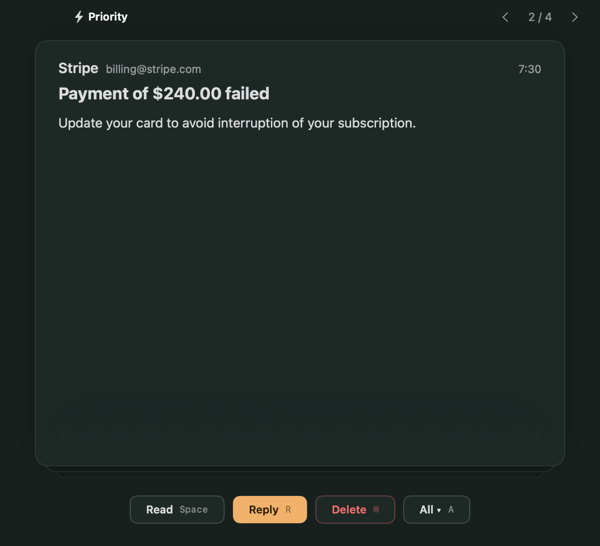
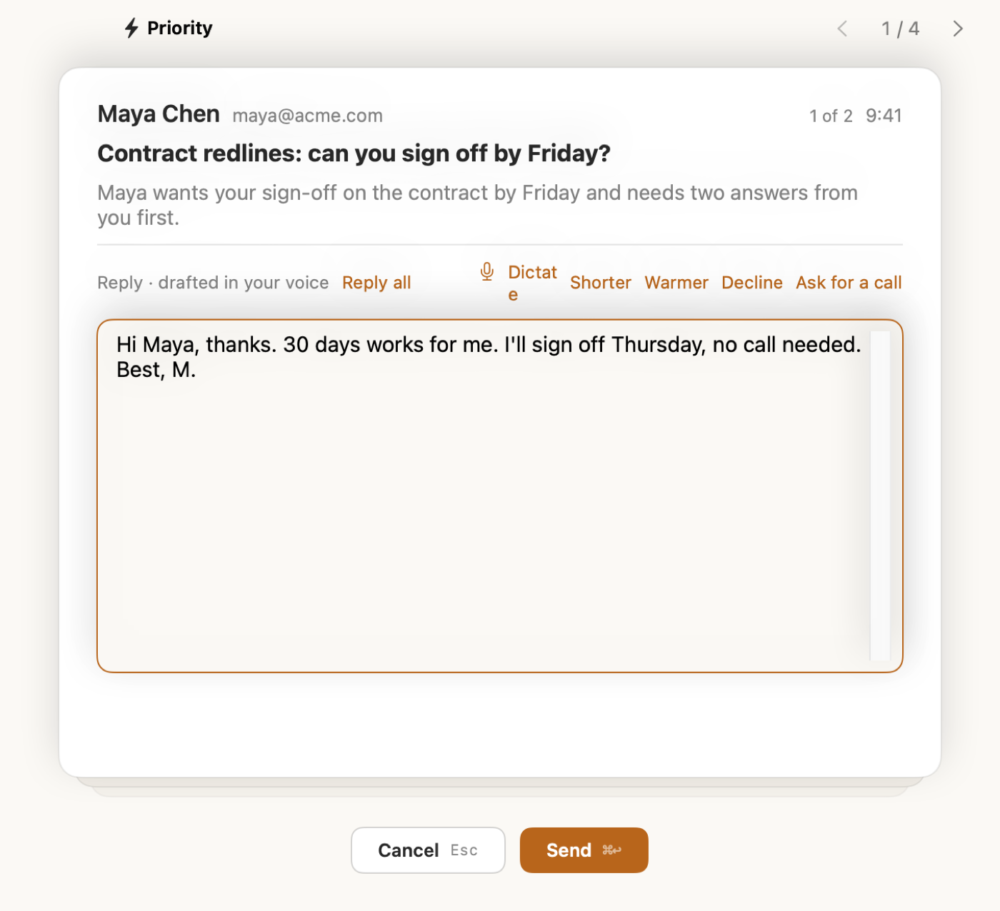
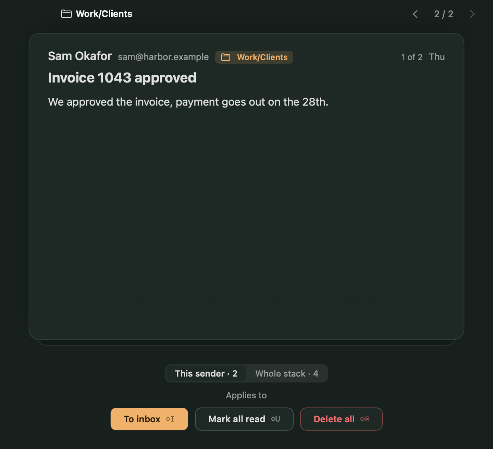
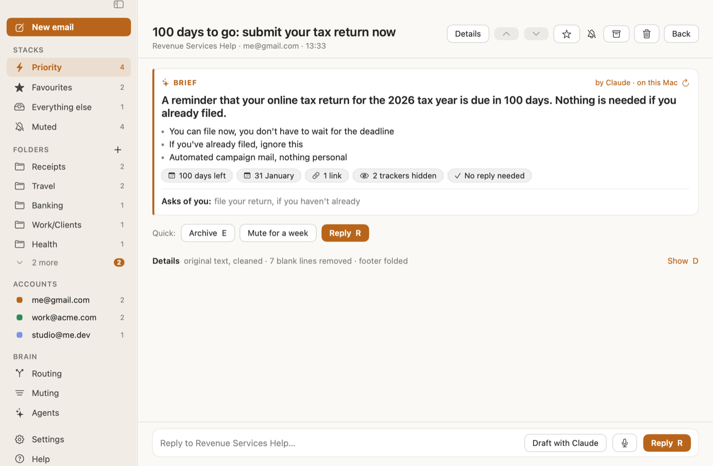
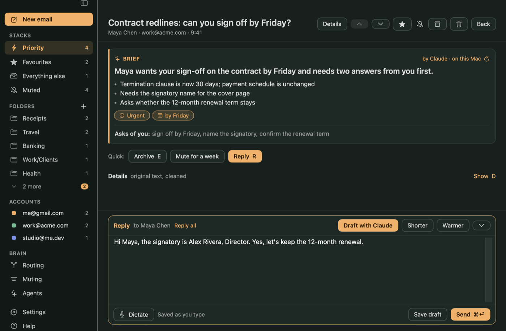
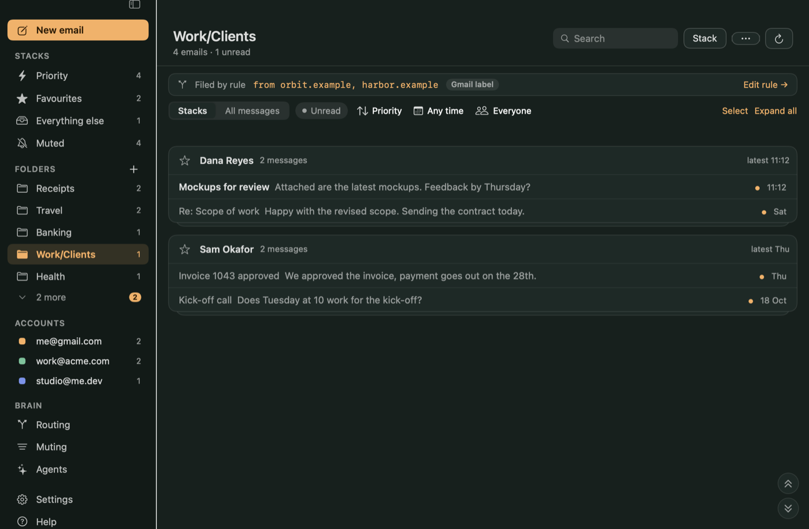
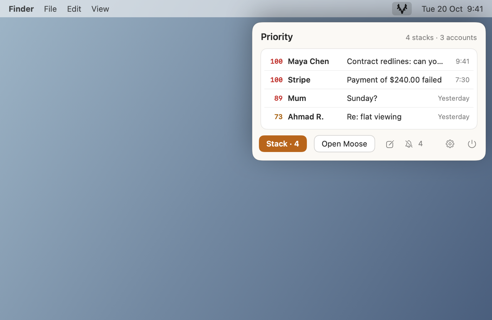
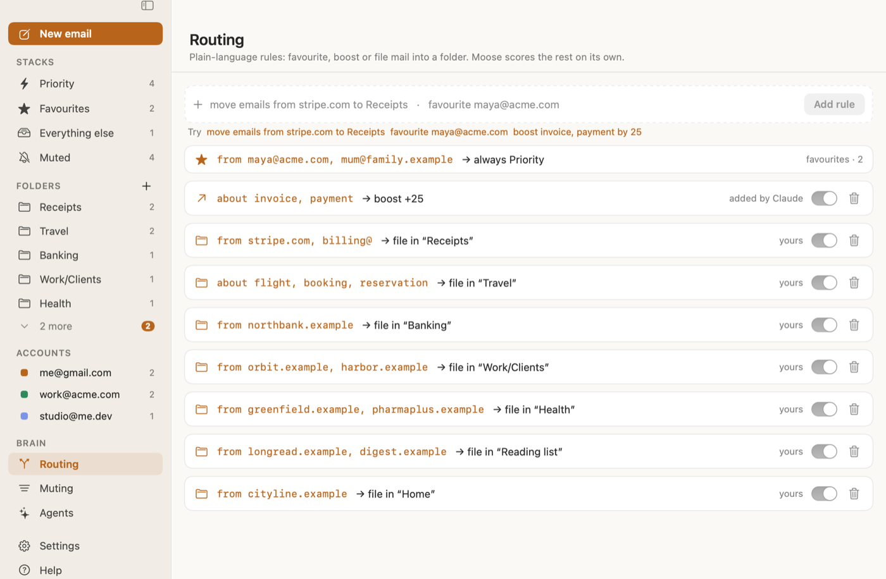
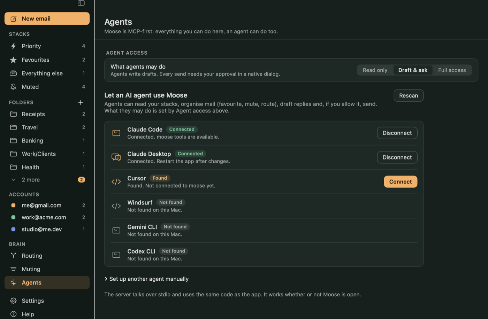
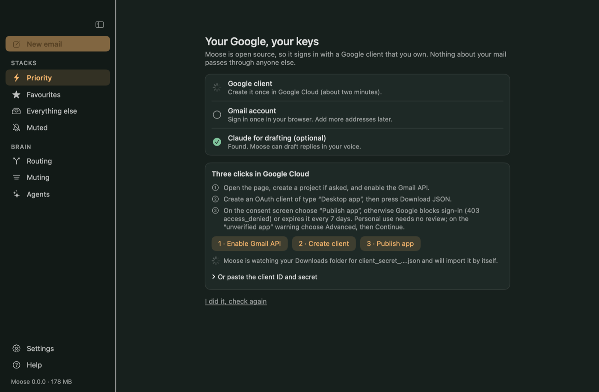
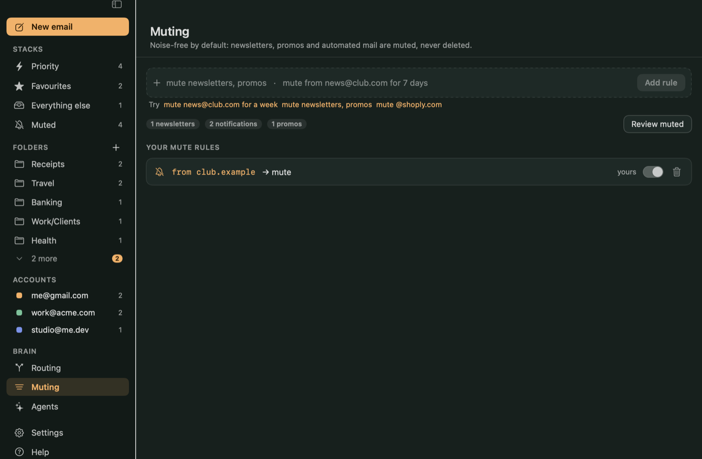
Sample data. Original design mockup.